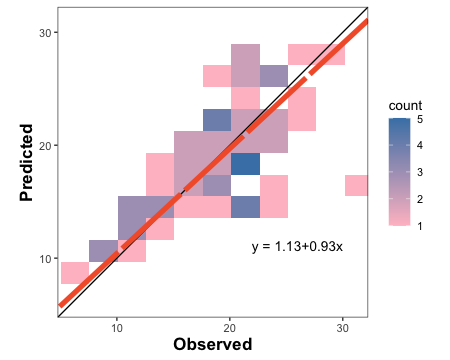
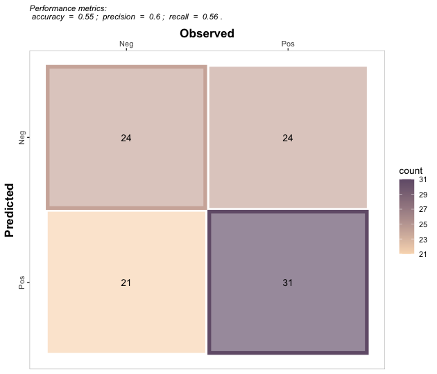
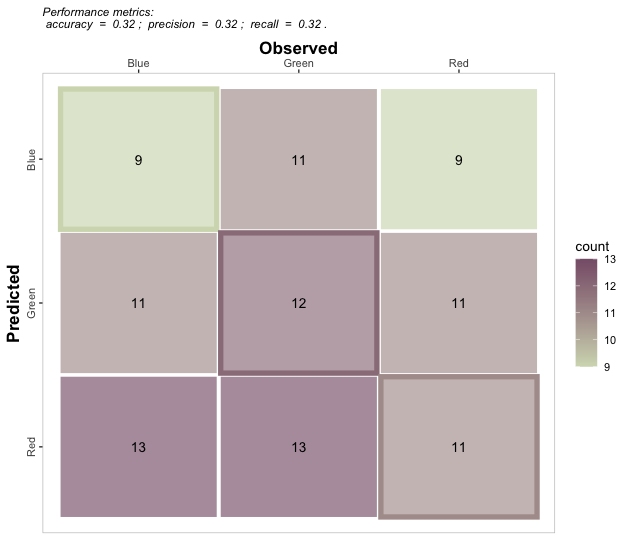

A compilation of more than 50 functions designed to evaluate prediction performance of regression (continuous variables) and classification (categorical variables) point-forecast models. Offered scoring rules account for different aspects of the agreement between predicted and observed values. For regression, it includes error metrics (e.g. MAE, RMSE), model efficiencies (e.g. NSE, KGE), indices of agreement (e.g. d, RAC), goodness of fit (e.g. r, R2), concordance correlation (e.g. CCC), error decomposition (e.g. lack of accuracy-precision), and plots the visualize agreement. For classification (binomial and multinomial), it includes functions for confusion matrix, accuracy, precision, recall, specificity, F-score, and Cohen’s Kappa. For more details visit the vignettes https://adriancorrendo.github.io/metrica/.
The goal of the metrica package is to offer users of regression (continuous variables) and classification (categorical variables) point-forecast simulation models (e.g. APSIM, DSSAT, DNDC, Machine Learning) a toolbox with a wide spectrum of goodness of fit, error metrics, indices, and coefficients accounting for different aspects of the agreement between predicted and observed values. Also, metrica some basic visualization functions to assess models performance (e.g. confusion matrix, scatter with regression line; Bland-Altman plot) provided in customizable format (ggplot).

This package contains +50 functions. Two arguments are always required: observed(Oi; a.k.a. actual, measured, truth, target) and predicted (Pi; a.k.a. simulated, fitted) values. Optional arguments include data that allows to call an existing data frame containing both observed and predicted vectors, and tidy, which controls the type of output as a list (tidy = FALSE) or as a data.frame (tidy = TRUE).
Some functions for regression also require to define the axis orientation. For example, the slope of the symmetric linear regression describing the bivariate scatter (SMA). Current included functions cover both worlds: “regression” (i.e. continuous variables) & classification (i.e. nominal or categorical variables).
Always keep in mind that predicted values should come from out-of-bag samples (unseen by training set) to avoid overestimation of prediction performance.
Check the Documentation at https://adriancorrendo.github.io/metrica/
Vignettes
1. Installation
You can install the CRAN version of metrica with:
install.packages("metrica")You can install the development version from GitHub with:
# install.packages("devtools")
devtools::install_github("adriancorrendo/metrica")2. Native datasets
The metrica package comes with four example datasets of continuous variables (regression) from the APSIM software:
1. wheat. 137 data-points of wheat grain N (grams per squared meter)
2. barley. 69 data-points of barley grain number (x1000 grains per squared meter)
3. sorghum. 36 data-points of sorghum grain number (x1000 grains per squared meter)
4. chickpea. 39 data-points of chickpea aboveground dry mass (kg per hectare)
These data correspond to the latest, up-to-date, documentation and validation of version number 2020.03.27.4956. Data available at: https://doi.org/10.7910/DVN/EJS4M0. Further details can be found at the official APSIM Next Generation website: https://APSIMnextgeneration.netlify.app/modeldocumentation
3.1. REGRESSION
# 1. A. Create a random dataset
# Set seed for reproducibility
set.seed(1)
# Create a random vector (X) with 100 values
X <- rnorm(n = 100, mean = 0, sd = 10)
# Create a second vector (Y) with 100 values by adding error with respect
# to the first vector (X).
Y <- X + rnorm(n=100, mean = 0, sd = 3)
# Merge vectors in a data frame, rename them as synonyms of observed (measured) and predicted (simulated)
example.data <- data.frame(measured = X, simulated = Y)
# 1. B. Or call native example datasets
example.data <- barley %>% # or 'wheat', 'sorghum', or 'chickpea'
# 1.b. create columns as synonyms of observed (measured) and predicted (simulated)
mutate(measured = obs, simulated = pred) 3.1.1.1. Create scatter plot with PO orientation
barley.scat.plot <- metrica::scatter_plot(data = example.data,
obs = measured,
pred = simulated,
orientation = "PO")
barley.scat.plot
# Alternative using vectors instead of dataframe
#metrica::scatter_plot(obs = example.data$obs, pred = example.data$pred)3.1.1.2. Create tiles plot with OP orientation
barley.tiles.plot <-
metrica::tiles_plot(data = example.data,
obs = measured,
pred = simulated,
bins = 10,
orientation = "OP",
colors = c(low = "pink", high = "steelblue"))
barley.tiles.plot
3.1.1.3. Create a density plot with OP orientation
barley.density.plot <-
metrica::density_plot(data = example.data,
obs = measured, pred = simulated,
n = 5,
orientation = "OP",
colors = c(low = "white", high = "steelblue")
)
barley.density.plot
3.1.1.4. Create a Bland-Altman plot
barley.ba.plot <- metrica::bland_altman_plot(data = example.data,
obs = measured, pred = simulated)
barley.ba.plot
3.1.2.2. Single estimates
# a. Estimate coefficient of determination (R2)
metrica::R2(data = example.data, obs = measured, pred = simulated)
#> [1] 0.4512998
# b. Estimate root mean squared error (RMSE)
metrica::RMSE(data = example.data, obs = measured, pred = simulated)
#> [1] 3.986028
# c. Estimate mean bias error (MBE)
metrica::MBE(data = example.data, obs = measured, pred = simulated)
#> [1] 0.207378
# c. Estimate index of agreement (d)
metrica::d(data = example.data, obs = measured, pred = simulated)
#> [1] 0.81913973.1.2.2. Metrics Summary
metrics.sum <- metrica::metrics_summary(data = example.data,
obs = measured, pred = simulated,
type = "regression")
# Print first 15
head(metrics.sum, n = 15)
#> Metric Score
#> 1 B0 1.1282743
#> 2 B1 0.9288715
#> 3 r 0.6717885
#> 4 R2 0.4512998
#> 5 Xa 0.9963915
#> 6 CCC 0.6693644
#> 7 MAE 3.0595501
#> 8 RMAE 0.1629325
#> 9 MAPE 16.8112673
#> 10 SMAPE 16.7848032
#> 11 RAE 0.7639151
#> 12 RSE 0.6164605
#> 13 MBE 0.2073780
#> 14 PBE 1.1043657
#> 15 PAB 0.2706729
# Optional wrangling (WIDE)
metrics.sum.wide <- metrics.sum %>%
tidyr::pivot_wider(tidyr::everything(),
names_from = "Metric",
values_from = "Score")3.1.3.1. Nested data
# a. Create nested df with the native examples
nested.examples <- bind_rows(list(wheat = metrica::wheat,
barley = metrica::barley,
sorghum = metrica::sorghum,
chickpea = metrica::chickpea),
.id = "id") %>%
dplyr::group_by(id) %>% tidyr::nest() %>% dplyr::ungroup()
head(nested.examples %>% group_by(id) %>% dplyr::slice_head(n=2))
#> # A tibble: 4 × 2
#> # Groups: id [4]
#> id data
#> <chr> <list>
#> 1 barley <tibble [69 × 2]>
#> 2 chickpea <tibble [39 × 2]>
#> 3 sorghum <tibble [36 × 2]>
#> 4 wheat <tibble [137 × 2]>
# b. Run
multiple.sum <- nested.examples %>%
# Store metrics in new.column "performance"
mutate(performance = map(data, ~metrica::metrics_summary(data=., obs = obs, pred = pred,
type = "regression")))
head(multiple.sum)
#> # A tibble: 4 × 3
#> id data performance
#> <chr> <list> <list>
#> 1 wheat <tibble [137 × 2]> <df [43 × 2]>
#> 2 barley <tibble [69 × 2]> <df [43 × 2]>
#> 3 sorghum <tibble [36 × 2]> <df [43 × 2]>
#> 4 chickpea <tibble [39 × 2]> <df [43 × 2]>
View(multiple.sum)3.1.3.2. Non-nested data
non_nested_summary <- nested.examples %>% unnest(cols = "data") %>%
group_by(id) %>%
summarise(metrics_summary(obs = obs, pred = pred, type = "regression")) %>%
dplyr::arrange(Metric)
head(non_nested_summary)
#> # A tibble: 6 × 3
#> # Groups: id [4]
#> id Metric Score
#> <chr> <chr> <dbl>
#> 1 barley AC 0.253
#> 2 chickpea AC 0.434
#> 3 sorghum AC 0.0889
#> 4 wheat AC 0.842
#> 5 barley B0 1.13
#> 6 chickpea B0 -99.03.1.4. Print metrics in a plot
df <- metrica::wheat
# Create list of selected metrics
selected.metrics <- c("MAE","RMSE", "RRMSE", "R2", "NSE", "KGE", "PLA", "PLP")
# Create the plot
plot <- metrica::scatter_plot(data = df,
obs = obs, pred = pred,
# Activate print_metrics arg.
print_metrics = TRUE,
# Indicate metrics list
metrics_list = selected.metrics,
# Customize metrics position
position_metrics = c(x = 1 , y = 20),
# Customize equation position
position_eq = c(x = 7, y = 19.5))
plot
3.1. CLASSIFICATION
Example datasets
binomial_case <- data.frame(labels = sample(c("Pos","Neg"), 100, replace = TRUE),
predictions = sample(c("Pos","Neg"), 100, replace = TRUE)) %>%
mutate(predictions = as.factor(predictions), labels = as.factor(labels))
multinomial_case <- data.frame(labels = sample(c("Red","Green", "Blue"), 100, replace = TRUE),
predictions = sample(c("Red","Green", "Blue"), 100, replace = TRUE) ) %>%
mutate(predictions = as.factor(predictions), labels = as.factor(labels))3.1.1.1. Binary
# a. Print
binomial_case %>% confusion_matrix(obs = labels, pred = predictions,
plot = FALSE, colors = c(low="#f9dbbd" , high="#735d78"),
unit = "count")
#> OBSERVED
#> PREDICTED Neg Pos
#> Neg 24 24
#> Pos 21 31
# b. Plot
binomial_case %>% confusion_matrix(obs = labels, pred = predictions,
plot = TRUE, colors = c(low="#f9dbbd" , high="#735d78"),
unit = "count")
3.1.1.2. Multiclass
# a. Print
multinomial_case %>% confusion_matrix(obs = labels,
pred = predictions,
plot = FALSE, colors = c(low="#f9dbbd" , high="#735d78"),
unit = "count")
#> OBSERVED
#> PREDICTED Blue Green Red
#> Blue 9 11 9
#> Green 11 12 11
#> Red 13 13 11
# b. Plot
multinomial_case %>% confusion_matrix(obs = labels,
pred = predictions,
plot = TRUE, colors = c(low="#d3dbbd" , high="#885f78"),
unit = "count")
3.1.1.1. Single dataset
# Get classification metrics one by one
binomial_case %>% accuracy(data = ., obs = labels, pred = predictions, tidy=TRUE)
#> accuracy
#> 1 0.55
binomial_case %>% error_rate(data = ., obs = labels, pred = predictions, tidy=TRUE)
#> misclass_rate
#> 1 0.45
binomial_case %>% precision(data = ., obs = labels, pred = predictions, tidy=TRUE)
#> precision
#> 1 0.5961538
binomial_case %>% recall(data = ., obs = labels, pred = predictions, atom = F, tidy=TRUE)
#> recall
#> 1 0.5636364
binomial_case %>% specificity(data = ., obs = labels, pred = predictions, tidy=TRUE)
#> spec
#> 1 0.5333333
binomial_case %>% baccu(data = ., obs = labels, pred = predictions, tidy=TRUE)
#> baccu
#> 1 0.5484848
binomial_case %>% fscore(data = ., obs = labels, pred = predictions, tidy=TRUE)
#> fscore
#> 1 0.5794393
binomial_case %>% cohen_kappa(data = ., obs = labels, pred = predictions, tidy=TRUE)
#> kappa
#> 1 0.09638554
binomial_case %>% mcc(data = ., obs = labels, pred = predictions, tidy=TRUE)
#> mcc
#> 1 0.09656091
binomial_case %>% fmi(data = ., obs = labels, pred = predictions, tidy=TRUE)
#> fmi
#> 1 0.5796671
# Get all at once with metrics_summary()
binomial_case %>% metrics_summary(data = ., obs = labels, pred = predictions, type = "classification")
#> Metric Score
#> 1 accuracy 0.55000000
#> 2 error_rate 0.45000000
#> 3 precision 0.59615385
#> 4 recall 0.56363636
#> 5 specificity 0.53333333
#> 6 baccu 0.54848485
#> 7 fscore 0.57943925
#> 8 cohen_kappa 0.09638554
#> 9 mcc 0.09656091
#> 10 fmi 0.57966713
multinomial_case %>% metrics_summary(data = ., obs = labels, pred = predictions, type = "classification")
#> Warning in metrica::mcc(data = ~., obs = ~labels, pred = ~predictions): The
#> generalization of the Matthews Correlation Coefficient for a multiclass setting
#> has not been implemented yet in metrica
#> Warning in metrica::fmi(data = ~., obs = ~labels, pred = ~predictions): The
#> Fowlkes-Mallows Index is not available for multiclass cases. The result has been
#> recorded as NA
#> Metric Score
#> 1 accuracy 0.32000000
#> 2 error_rate 0.68000000
#> 3 precision 0.32019443
#> 4 recall 0.32029977
#> 5 specificity 0.66031031
#> 6 baccu 0.49030504
#> 7 fscore 0.32024709
#> 8 cohen_kappa -0.01918465
#> 9 mcc NA
#> 10 fmi NA
# Get a selected list at once with metrics_summary()
selected_class_metrics <- c("accuracy", "recall", "fscore")
# Binary
binomial_case %>% metrics_summary(data = ., obs = labels, pred = predictions, type = "classification",
metrics_list = selected_class_metrics)
#> Metric Score
#> 1 accuracy 0.5500000
#> 2 recall 0.5636364
#> 3 fscore 0.5794393
# Multiclass
multinomial_case %>% metrics_summary(data = ., obs = labels, pred = predictions, type = "classification",
metrics_list = selected_class_metrics)
#> Warning in metrica::mcc(data = ~., obs = ~labels, pred = ~predictions): The
#> generalization of the Matthews Correlation Coefficient for a multiclass setting
#> has not been implemented yet in metrica
#> Warning in metrica::fmi(data = ~., obs = ~labels, pred = ~predictions): The
#> Fowlkes-Mallows Index is not available for multiclass cases. The result has been
#> recorded as NA
#> Metric Score
#> 1 accuracy 0.3200000
#> 2 recall 0.3202998
#> 3 fscore 0.32024714. Import data from APSIM
4.1. APSIM Classic (.out)
# Use import_apsim_out for APSIM Classic output
soybean.out <- metrica::import_apsim_out(filepath = "tests/testthat/examples/soybean.out")
head(soybean.out)
#> Date (dd/mm/yyyy) yield (kg/ha) biomass (kg/ha) grain_protein (%)
#> 1 16/05/2001 1449.8 2915.9 37.115
#> 2 10/05/2002 1092.5 2965.1 37.115
#> 3 23/04/2003 1368.9 3529.6 37.115
#> 4 26/04/2004 2121.6 4710.3 37.115
#> 5 09/05/2005 1950.3 4303.9 37.115
#> 6 20/04/2006 1670.6 3806.6 37.115
#> GrainN (g/m^2) lai (m^2/m^2) oilGrainN (g/m^2) grain_oil_conc (%)
#> 1 0.00 0 0 0.4
#> 2 7.10 0 0 0.4
#> 3 8.90 0 0 0.4
#> 4 13.79 0 0 0.4
#> 5 12.68 0 0 0.4
#> 6 10.86 0 0 0.44.1. APSIM NextGeneration (.db)
# Use import_apsim_db for APSIM NextGeneration output
soybean.db <- metrica::import_apsim_db(filename = "soybean.example.db", folder = "tests/testthat/examples/")
head(soybean.db)
#> CheckpointID SimulationID Zone Clock.Today Soybean.Phenology.Stage
#> 1 1 1 paddock 2018-01-01 12:00:00 1
#> 2 1 1 paddock 2018-01-02 12:00:00 1
#> 3 1 1 paddock 2018-01-03 12:00:00 1
#> 4 1 1 paddock 2018-01-04 12:00:00 1
#> 5 1 1 paddock 2018-01-05 12:00:00 1
#> 6 1 1 paddock 2018-01-06 12:00:00 1
#> Soybean.Phenology.CurrentStageName Soybean.AboveGround.Wt Yield
#> 1 0 0
#> 2 0 0
#> 3 0 0
#> 4 0 0
#> 5 0 0
#> 6 0 0
#> Soybean.Grain.Size Soybean.Grain.Number Soybean.Total.Wt Soybean.Leaf.FRGR
#> 1 0 0 0 0
#> 2 0 0 0 0
#> 3 0 0 0 0
#> 4 0 0 0 0
#> 5 0 0 0 0
#> 6 0 0 0 0
#> Soybean.Leaf.Fw Soybean.Leaf.Photosynthesis.FT Soybean.Leaf.Photosynthesis.FW
#> 1 1 0 1
#> 2 1 0 1
#> 3 1 0 1
#> 4 1 0 1
#> 5 1 0 1
#> 6 1 0 1
#> Soybean.WaterUptake(1) Soybean.WaterUptake(2) Soybean.WaterUptake(3)
#> 1 NA NA NA
#> 2 NA NA NA
#> 3 NA NA NA
#> 4 NA NA NA
#> 5 NA NA NA
#> 6 NA NA NA
#> Soybean.WaterUptake(4) Soybean.WaterUptake(5) Soybean.WaterUptake(6)
#> 1 NA NA NA
#> 2 NA NA NA
#> 3 NA NA NA
#> 4 NA NA NA
#> 5 NA NA NA
#> 6 NA NA NA
#> Soybean.WaterUptake(7) Soybean.WaterUptake(8) Soybean.WaterUptake(9)
#> 1 NA NA NA
#> 2 NA NA NA
#> 3 NA NA NA
#> 4 NA NA NA
#> 5 NA NA NA
#> 6 NA NA NA
#> Soybean.WaterUptake(10) Date
#> 1 NA 2018-01-01
#> 2 NA 2018-01-02
#> 3 NA 2018-01-03
#> 4 NA 2018-01-04
#> 5 NA 2018-01-05
#> 6 NA 2018-01-06
# If observed.data is already as a dataframe, the user may do the match using a simple code like this:
# PO.dataframe <- simulated.data %>% left_join(., observed.data) *by = "col" arg. could be required*